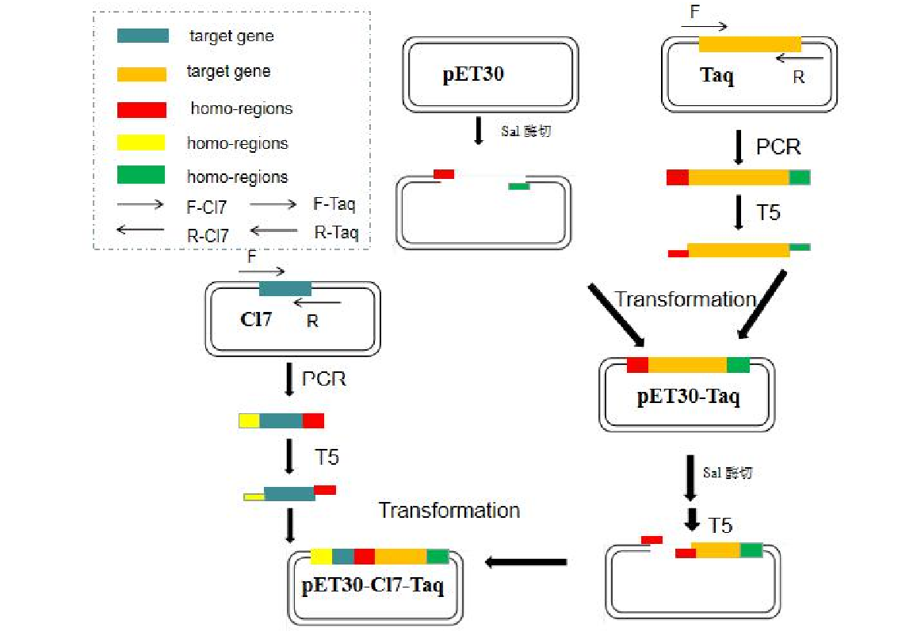
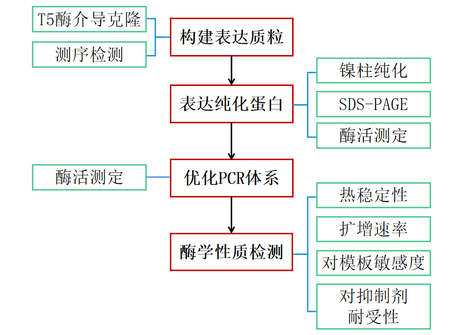

一、实验方案
本研究将Taq DNA聚合酶与双链DNA结合蛋白CL7融合，纯化CL7-Taq酶，以期增强酶与模板结合的能力，优化其酶学性质。并设计CL7-Taq酶作用下的最优PCR反应体系，扩大其应用范围。
1.构建CL7-Taq酶表达质粒
利用 T5 核酸酶介导的克隆方法，将Taq和CL7-Taq基因克隆到带有卡娜抗性基因的pET30a载体上。我们选择Lac启动子，该启动子可以被乳糖和IPTG诱导，从而特异性表达目的基因CL7-Taq聚合酶。
2.表达并纯化CL7-Taq酶
a.将表达质粒转化至大肠杆菌感受态细胞中，用卡那霉素进行筛选，并用IPTG诱导酶的表达；
b.破碎菌体细胞，利用镍柱可与His标签结合的特性纯化蛋白质，通过SDS-PAGE 电泳检测酶的纯度；
c.通过酶标仪检测OD值，代入蛋白质浓度曲线来测定酶的浓度；
d.通过检测酶扩增速率来测定酶的活性。
3.确立CL7-Taq酶PCR反应体系
a.设计0-9mM的MgCl2，10-100mMKCl，10-80mM的(NH4)2SO4及pH值7.0-9.0的反应缓冲液，测定Taq酶与Cl7-Taq酶的酶活；
b.用EvaEZ荧光聚合酶活性测定试剂盒绘制Taq酶的酶活标准曲线；
c.通过qPCR的单链延伸反应检测酶上荧光信号；
d.带入公式计算出对应酶活，分析数据确定最佳PCR反应体系。
4.检测CL7-Taq酶的酶学性质
a.通过检测加热不同时间，1U/μL的酶扩增的酶活得到酶的热稳定性；
b.通过相同时间，1U/μL的酶扩增不同大小的片段所得产物量检测酶的扩增速率；
c.通过扩增不同浓度梯度模板检测酶对模板的敏感度；
d.通过检测酶对于不同酶抑制剂的催化活性确定酶对抑制剂的耐受性。
二、技术路线
三、预期结果
1.成功构建CL7-Taq表达质粒；
2.成功纯化出CL7-Taq蛋白，并得到CL7-Taq酶作用下最适PCR反应体系；
3.确立CL7-Taq酶的酶学性质优于Taq酶且具有普适性；
4.提供CL7-Taq酶的应用方案。